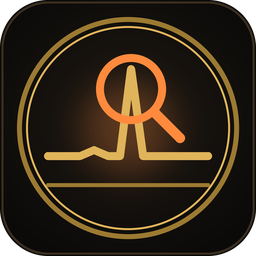
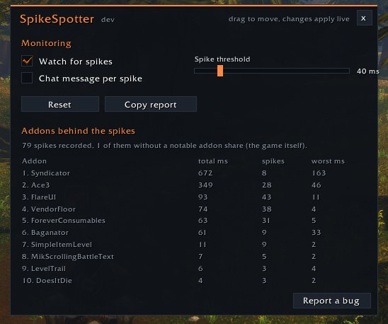
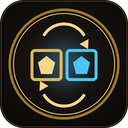

SpikeSpotter
Short FPS drops when you kill, loot or pull? SpikeSpotter asks the game's own addon profiler which addons used those frames and ranks them, with a copyable report.
See it in action
A recreation in your browser, close to what you see in game.
Recorded in game

What it does
Settings
- ◆Its own window:
/spikeor the addon menu at the minimap. The ranking refreshes live while you play. - ◆Watch for spikes, Chat message per spike, Spike threshold (20 to 150 ms).
- ◆Reset before a test, Copy report after it.
- ◆How to use it: Reset, play a few minutes the way the stutter happens, look at the ranking, disable the top addon and test again.
Changelog
- Detects frame-time spikes and names the addons that used those frames (client addon profiler).
- Ranking by total time, count and worst frame; spikes without a notable addon share are counted as the game's own.
- Every spike logged with the game events that fired just before it.
- Copy report: ranking and the last 100 spikes as text.
- Optional chat message per spike, adjustable threshold, one switch to turn all measuring off.
- Window of its own with a "Report a bug" button.
More from Bencepo

TrinketDock
VendorFloor
ProcFlare
Feedback, bugs and ideas
Every addon is tested in game before it ships, but Forever changes often. Tell me what breaks and what you miss.
Report a bug
Open an issue on GitHub (the form asks for everything needed) or leave a comment on CurseForge: what you did, what happened, and the error text from BugSack if there is one.
Share your run
LevelTrail turns your export into a share image for Discord or Reddit, VendorFloor does the same for your flips. Names can be hidden.
Suggest a feature
Ideas that make leveling faster or the UI calmer have the best chance. Comments on CurseForge reach me directly.
Support the addons
All addons and pages are free and stay free, without ads or cookies. A privacy-friendly counter only tallies page views. If they save you time in game, a tip keeps new features and fixes coming.